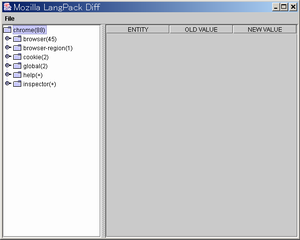

LpDiff の使い方
author:target:
Graphical User Interface
-
起動 : Launch LpDiff
コマンドプロンプトなどのコンソールから以下のコマンドを入力してください。
java -jar LpDiff.jar
Windows 環境であれば jar ファイルをダブルクリックしても起動します。
Type this command on your console.
java -jar LpDiff.jarIf you are working on Windows, you can launch by double click on the jar file.
-
読込 : Load Directories

"Load Directories" メニューを選択してください。ダイアログが表示されるので差分比較をする言語リソースが収められているディレクトリを入力して下さい。
指定されたディレクトリ配下のファイルが左ペインにツリー表示されます。
Select "Load Directories" menu. In the dialog shown, type target directories which contains the language resource files you want to compare.
Then directory and file tree are shown in the left pane.
-
表示 : Show Diff Tables

変更や追加または削除されたファイル名の末尾にはそれぞれ順に "(*)" や "(+)" または "(-)" が表示されます。ディレクトリ名の末尾に表示されている数字はそのディレクトリ中のファイルのうち過不足や変更のあったファイル数です。
ファイル名をダブルクリックするとそのファイルで定義されている言語リソースの差分表が右ペインに表示されます。変更されたものは青、追加されたものは赤、削除されたものは緑で表示されます。
Modified, added or deleted files have postfix of "(*)", "(+)" or "(-)". At the end of the directory names you can see the numbers, which indicate how many files in the directory don't match.
Double click on filename in the left pane, then language resouce diff of the file will be shown in the right pane. Modified entity are shown in blue text, added ones are in red and deleted ones are in green.
-
出力 : Print Diff HTML
言語リソースの差分出力には "Print difference" と "Print all" の 2 通りの形式があります。前者は差分のみをまとめて 1 つの HTML ファイルに出力し、後者は変更のないものも含めて全リソースの比較表を言語リソースファイル毎の HTML に出力します。
- Print difference
- "Print difference" メニューを選択するとダイアログが表示されるので、差分出力を書き込む HTML ファイルを指定して下さい。"Write defaut CSS" のチェックを入れると出力 HTML 用の CSS ファイルが一緒に保存されます。
- Print all
- "Print all" メニューを選択しても同じようなダイアログが表示されますが、この場合はリソース比較 HTML を保存する ディレクトリを指定して下さい。
Lpdiff have two methods to output diff of language resources: "Print difference" and "Print all". Former one outputs only differences into the single HTML file, latter one generates all resources' diff table into HTML files corresponding to each language resource files.
- Print difference
- You'll see a dialog when you select "Print difference" menu, then specify HTML file you want to write diff into. When you check "Write default CSS", style file for the output HTML will be saved too.
- Print all
- You'll also see the similar dialog when you select "Print all" menu, but here you should specify directory you want to save HTMLs.


{kind=link}
{kind=link}
{kind=link}
{kind=link}
{kind=link}
Character User Interface
LpDiff はコマンドラインツールとして使用することもできます。次のように入力すると "Print difference" および "Print all" メニューと同じ出力が得られます。
java -jar LpDiff.jar -diff [比較元ディレクトリ] [比較先ディレクトリ] [出力ファイル名]
java -jar LpDiff.jar -all [比較元ディレクトリ] [比較先ディレクトリ] [出力ディレクトリ名]
You can also use LpDiff from your console. Type below commands to print the same output as "Print dirrerence" or "Print all" menu.
java -jar LpDiff.jar -diff [compare dir 1] [compare dir 2] [output file]
java -jar LpDiff.jar -all [compare dir 1] [compare dir 2] [output dir]